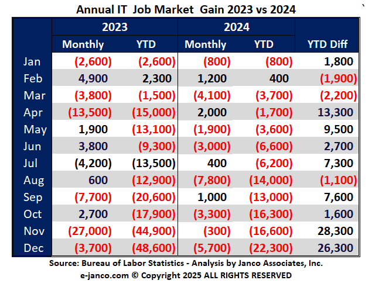

IT job market is still shrinking but not as quickly as last year
Half the number of roles axed, and yes – you can keep blaming AI
The IT jobs market has shrunk for a second year in a row, says tech consultancy Janco Associates, but at least things weren't as bad in 2024 as they were in 2023.
Nearly 71,000 IT-specific roles have been eliminated in the past two years, Janco said in a report released Friday, as a downward trend continues in the industry. However, only 22,300 of that shrinkage took place in 2024, with 48,600 jobs lost in 2023.
Janco CEO M Victor Janulaitis said last year, when his firm published its annual report for 2023, that much of that year's losses were down to layoffs and AI. Layoffs were less of a concern in 2024 (though that's relative - 152,664 tech sector professionals were cut loose in 2024 compared to 264,220 in 2023), but AI continues to be an issue.
"With all the new advances in technology, many jobs have been eliminated or automated out of existence," Janulaitis said. "No longer are there scores of monitors of status, KPI metrics, and SLAs as many of those processes are automatically checked and when exceptions are noted, emails or text alerts are sent out to address the issue."
In short, AI automation has eliminated lots of rank-and-file IT jobs, and they probably aren't coming back.
"No longer are IT organizations populated with secretaries, data-entry operators, administrative monitoring clerks, and a massive help desk staff," Janulaitis added. "Rather the new roles are data architect, AI developer, e-commerce specialist, and similar roles."

In keeping with that trend, Janco reported that there continues to be demand for anyone with skills in AI and developers with knowledge of "new technology," as well as for internet processing and security professionals. Most hiring, the firm noted, isn't happening at top-tier tech companies, which have more cash to invest in automation, but rather in small to midsize enterprises.
Regardless of the size of the employer, AI does continue to have an effect on entry-level IT work, as much of that has fallen victim to automation.
The tech unemployment rate is down, but not by enough
Much of the data Janco presented falls in line with CompTIA's most recent tech employment report, which noted that tech hiring had increased in the past few months, but was still down overall.
According to CompTIA, the tech unemployment rate has fallen to the lowest level since November of 2023, at just 2 percent, while the national unemployment rate across all industries has held steady at 4.1 percent.
CompTIA also reported a recent decline of 6,117 jobs across all roles within the technology industry.
Janco pointed out that, while IT unemployment was down toward the end of 2024, it was above the national average for several months prior, which the firm believes is "a bad omen" for the IT job market heading into 2025 and a new US presidential administration.
"From our interviews with over 86 CFOs and CIOs, we found that the election results were viewed as positive," Janulaitis noted.
Still, those positive vibes likely won't be enough to offset the current IT jobs market, which Janco predicts will continue to shrink in the coming months. Too few jobs have been added of late, the firm noted, to absorb all of the unemployed IT professionals still looking for work.
Given the continued decline in open IT roles, our January 2024 advice still holds: It might not be a bad idea to add some AI skills to the toolbox - it's what recruiters still want.
Or, if machine learning isn't your slice of the pie, consider a career in cybersecurity - there are lots of open roles to be filled there, too.